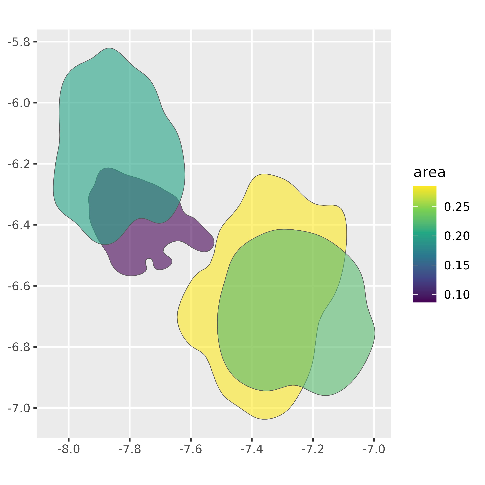

Because densityarea can return sf polygons, this can allow you to use its functionality (see this cheat sheet for some examples).
Density polygons as simple features
As a first example, we’ll estimate how much different data clusters
overlap in the s01 dataset.
We’ll focus on the vowels iy, ey,
o and oh which correspond to the following
lexical classes:
| vowel label | lexical class |
|---|---|
iy |
Fleece |
ey |
Face |
o |
Lot |
oh |
Thought |
Within this subset of vowel categories, we’ll get the 80% probability
density estimate as sf::st_polygon()s.
vowel_subset |>
group_by(plt_vclass) |>
reframe(
density_polygons(lF2,
lF1,
probs = 0.8,
as_sf = TRUE)
) |>
st_sf()->
vowel_polygons
vowel_polygons
#> Simple feature collection with 4 features and 3 fields
#> Geometry type: POLYGON
#> Dimension: XY
#> Bounding box: xmin: -8.050893 ymin: -7.037138 xmax: -6.996794 ymax: -5.820745
#> CRS: NA
#> # A tibble: 4 × 4
#> plt_vclass level_id prob geometry
#> <chr> <int> <dbl> <POLYGON>
#> 1 ey 1 0.8 ((-7.840111 -6.222708, -7.842276 -6.221536, -7.8515…
#> 2 iy 1 0.8 ((-7.862895 -5.820745, -7.872822 -5.820892, -7.8799…
#> 3 o 1 0.8 ((-7.351372 -6.23354, -7.365699 -6.233222, -7.38002…
#> 4 oh 1 0.8 ((-7.231025 -6.420727, -7.240256 -6.419138, -7.2494…We can plot these directly by using the sf::geom_sf()
geom for ggplot2.
ggplot(vowel_polygons) +
geom_sf(
aes(fill = plt_vclass),
alpha = 0.6
) +
scale_fill_brewer(palette = "Dark2")Initial {sf} operations
All of the sf operations for geometries are available
to use on vowel_polygons. For example, we can get the area
of each polygon, with sf::st_area() and use it in
plotting.
ggplot(vowel_polygons) +
geom_sf(
aes(fill = area),
alpha = 0.6
)+
scale_fill_viridis_c()
Or, we can get the polygon centroids and plot them.
vowel_polygons |>
st_centroid() |>
ggplot()+
geom_sf_label(
aes(label = plt_vclass,
color = plt_vclass,
size = area)
)+
scale_color_brewer(palette = "Dark2")+
coord_fixed()
#> Warning: st_centroid assumes attributes are constant over geometriesGetting overlaps
To use the density polygons like “cookie cutters” on each other, we
need to use st_intersections().
vowel_polygons |>
st_intersection() ->
vowel_intersections
vowel_intersections
#> Simple feature collection with 6 features and 6 fields
#> Geometry type: POLYGON
#> Dimension: XY
#> Bounding box: xmin: -8.050893 ymin: -7.037138 xmax: -6.996794 ymax: -5.820745
#> CRS: NA
#> # A tibble: 6 × 7
#> plt_vclass level_id prob area n.overlaps origins geometry
#> <chr> <int> <dbl> <dbl> <int> <list> <POLYGON>
#> 1 ey 1 0.8 0.0865 1 <int> ((-7.63623 -6.326645, -7.…
#> 2 ey 1 0.8 0.0865 2 <int> ((-7.896883 -6.458929, -7…
#> 3 iy 1 0.8 0.202 1 <int> ((-7.902604 -6.461049, -7…
#> 4 o 1 0.8 0.285 1 <int> ((-7.236759 -6.940033, -7…
#> 5 o 1 0.8 0.285 2 <int> ((-7.093493 -6.493589, -7…
#> 6 oh 1 0.8 0.224 1 <int> ((-7.092569 -6.49308, -7.…This data frame contains a polygon for each unique intersection of
the input polygons, with a new n.overlaps column.
ggplot(vowel_intersections) +
geom_sf(
aes(fill = n.overlaps)
)+
scale_fill_viridis_c()The labels of the new overlapping regions aren’t very informative,
but we can create some new labels by using the indices in the
origins column.
new_label <- function(indices, labels){
str_c(labels[indices],
collapse = "~")
}
vowel_intersections |>
mutate(
groups = map_chr(
origins,
.f = new_label,
labels = vowel_polygons$plt_vclass
)
) |>
relocate(groups, .after = plt_vclass)->
vowel_intersections
vowel_intersections
#> Simple feature collection with 6 features and 7 fields
#> Geometry type: POLYGON
#> Dimension: XY
#> Bounding box: xmin: -8.050893 ymin: -7.037138 xmax: -6.996794 ymax: -5.820745
#> CRS: NA
#> # A tibble: 6 × 8
#> plt_vclass groups level_id prob area n.overlaps origins
#> <chr> <chr> <int> <dbl> <dbl> <int> <list>
#> 1 ey ey 1 0.8 0.0865 1 <int [1]>
#> 2 ey ey~iy 1 0.8 0.0865 2 <int [2]>
#> 3 iy iy 1 0.8 0.202 1 <int [1]>
#> 4 o o 1 0.8 0.285 1 <int [1]>
#> 5 o o~oh 1 0.8 0.285 2 <int [2]>
#> 6 oh oh 1 0.8 0.224 1 <int [1]>
#> # ℹ 1 more variable: geometry <POLYGON>
ggplot(vowel_intersections)+
geom_sf(
aes(fill = groups)
)+
scale_fill_brewer(palette = "Dark2")We can also calculate the areas of these new polygons, and compare
them to the original areas (which have been preserved in
areas.
Spatial filters
There are also a number of spatial filters and merges that can be used interestingly if the original data points are also converted to sf objects.
s01 |>
sfheaders::sf_point(
x = "lF2",
y = "lF1",
keep = TRUE
) ->
s01_sf
s01_sf
#> Simple feature collection with 4245 features and 10 fields
#> Geometry type: POINT
#> Dimension: XY
#> Bounding box: xmin: -8.095446 ymin: -7.335764 xmax: -6.541463 ymax: -5.439817
#> CRS: NA
#> First 10 features:
#> name age sex word vowel plt_vclass ipa_vclass F1 F2 dur
#> 1 s01 y f OKAY EY eyF ejF 763.5 2088.1 0.20
#> 2 s01 y f UM AH uh ʌ 699.5 1881.3 0.19
#> 3 s01 y f I'M AY ay aj 888.8 1934.1 0.07
#> 4 s01 y f LIVED IH i ɪ 555.5 1530.5 0.05
#> 5 s01 y f IN IH i ɪ 612.2 2323.4 0.06
#> 6 s01 y f COLUMBUS AH @ ə 612.4 1903.7 0.07
#> 7 s01 y f MY AY ay aj 578.4 1959.3 0.09
#> 8 s01 y f ENTIRE IH i ɪ 529.9 2332.1 0.08
#> 9 s01 y f ENTIRE ER *hr ə˞ 538.4 1682.8 0.18
#> 10 s01 y f LIFE AY ay0 aj0 744.6 1702.1 0.15
#> geometry
#> 1 POINT (-7.64401 -6.637913)
#> 2 POINT (-7.539718 -6.550366)
#> 3 POINT (-7.567397 -6.789872)
#> 4 POINT (-7.33335 -6.319869)
#> 5 POINT (-7.750787 -6.417059)
#> 6 POINT (-7.551555 -6.417386)
#> 7 POINT (-7.580343 -6.360266)
#> 8 POINT (-7.754524 -6.272688)
#> 9 POINT (-7.428214 -6.288602)
#> 10 POINT (-7.439618 -6.612847)Next, we can get the density polygon for a single vowel,.
s01 |>
filter(plt_vclass == "iy") |>
reframe(
density_polygons(lF2, lF1, probs = 0.8, as_sf =T)
) |>
st_sf()->
iy_sfSpatial filter
Let’s get all of the points in s01_sf that are “covered
by” the iy_sf polygon.
s01_sf |>
st_filter(
iy_sf,
.predicate = st_covered_by
)->
covered_by_iy
covered_by_iy |>
mutate(plt_vclass = plt_vclass |>
fct_infreq() |>
fct_lump_n(5)) |>
ggplot()+
geom_sf(data = iy_sf)+
geom_sf(aes(color = plt_vclass))+
scale_color_brewer(palette = "Dark2")Obviously, the 80% probability density area for iy is
not a homogeneous region.
covered_by_iy |>
mutate(plt_vclass = plt_vclass |>
fct_infreq() |>
fct_lump_n(5)) |>
count(plt_vclass) |>
ggplot(aes(plt_vclass, n))+
geom_col(
aes(fill = plt_vclass)
)+
scale_fill_brewer(palette = "Dark2")Spatial join
Let’s see which vowel category a random vowel token is close to.
set.seed(100)
s01_sf |>
slice_sample(n = 1)->
rand_vowel
rand_vowel
#> Simple feature collection with 1 feature and 10 fields
#> Geometry type: POINT
#> Dimension: XY
#> Bounding box: xmin: -7.440205 ymin: -6.508322 xmax: -7.440205 ymax: -6.508322
#> CRS: NA
#> name age sex word vowel plt_vclass ipa_vclass F1 F2 dur
#> 1 s01 y f LIKE AY ay0 aj0 670.7 1703.1 0.09
#> geometry
#> 1 POINT (-7.440205 -6.508322)Then, we’ll get density polygons at a few different probability points for all vowels.
s01 |>
group_by(plt_vclass) |>
reframe(
density_polygons(
lF2,
lF1,
probs = ppoints(5),
range_mult = 0.5,
as_sf = T
)
) |>
st_sf() ->
vowel_probsThere are 5 probability level polygons for each vowel category in
vowel_probs. We join the random vowel’s data onto this set
of polygons with st_join().
Now, for each vowel category in this new data frame, let’s get the smallest probability polygon (i.e. where the random point is closest to the center probability mass).
vowel_within |>
group_by(plt_vclass.x) |>
filter(prob == min(prob)) |>
ungroup() |>
mutate(plt_vclass = fct_reorder(plt_vclass.x, prob)) ->
vowel_min_prob
vowel_min_prob |>
ggplot()+
geom_sf(aes(fill = prob)) +
geom_sf(data = rand_vowel |> mutate(plt_vclass = NULL),
color = "red") +
facet_wrap(~plt_vclass)